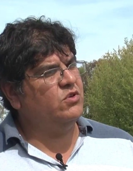

<div class="modal fade" tabindex="0" id="disertante-info-1" aria-hidden="true">
    <div class="modal-dialog">
		<div class="modal-content">
            <div class="modal-header">				
				<button type="button" class="close" data-dismiss="modal" aria-label="Close">
						<span aria-hidden="true">&times;</span>
				</button>
            </div>
            <div class="disertante-text modal-body">
                <div class="row">
                    <div class="col-4">
                        
                        <a class="link-cv">DESCARGAR CV</a>    
                    </div> 
                    <div class="col-8">
                        <h3>Rodolfo Gil</h3>
                        <h5>Agricultural Engineer, Master of Science in Soils of the National University of Buenos Aires, Argentina. Technical Research at the Institute of Soils of the INTA (National institute of agricultural technology).</h5>
                        <a><i class="fab fa-linkedin-in"></i></a>
                        <a><i class="fab fa-twitter"></i></a>
                        <hr>
                        <h6>CHARLA Y ACTA</h6>
                        <h3><strong>"Nombre de la charla en la que participa"<strong></h3>
                    </div> 
                </div>
            </div>    
        </div>
    </div>    
</div> 